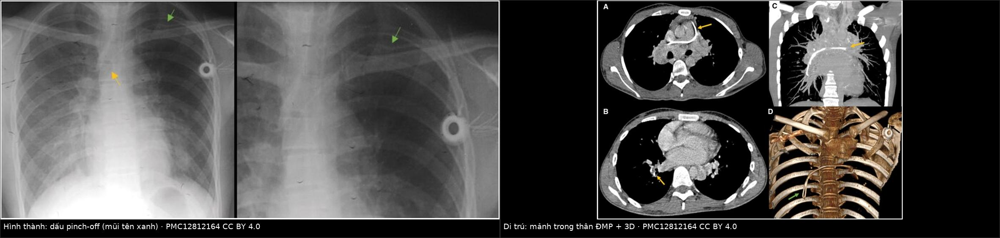
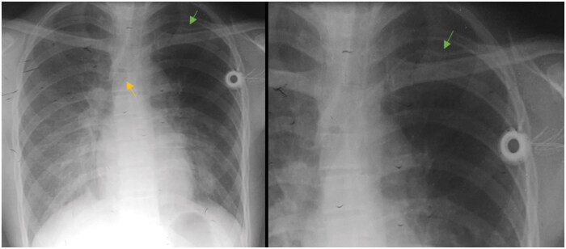
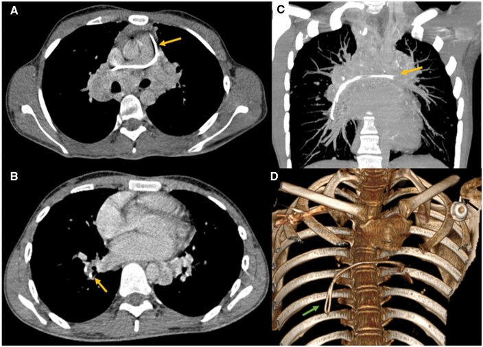
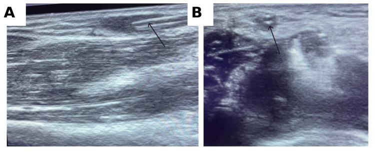
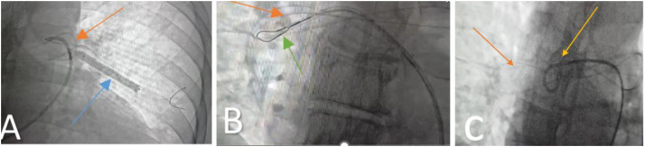

3126 — Dị vật catheter & mảnh dụng cụ di trú trong lòng mạch ở trẻ: dấu pinch-off trước, mảnh trong động mạch phổi sau
Tags: pattern:di-vat-long-mach pattern:catheter-gay pattern:di-tru-dong-mach-phoi pattern:dau-pinch-off vung:nguc vung:tim vung:chi-tren anatomy:tinh-mach-chu-tren anatomy:dong-mach-phoi anatomy:tim-phai protocol:XR-nguc protocol:CT-nguc protocol:fluoro-DSA protocol:sieu-am-mach score:Hinke-pinch-off
Mức chắc chắn (certainty): tổng hợp y văn (literature synthesis) — ghép một ca hội chứng pinch-off gây gãy catheter, có X-quang và CT 3D (BJR Case Reports 2025/2026, PMC12812164, CC BY 4.0), một ca mảnh catheter tĩnh mạch ngoại vi lưu trong lòng mạch, định vị bằng siêu âm (Cureus 2026, PMC13152028, CC BY 4.0), một ca mảnh PICC trôi vào động mạch phổi được lấy bằng snare hai đường vào (Radiology Case Reports 2026, PMC13330607, CC BY-NC-ND 4.0) và một ca sơ sinh gãy catheter rốn di trú vào nhĩ trái (Radiology Case Reports 2024, PMC10825532, CC BY 4.0). Không có ca do nhóm tự chụp.
Câu hỏi thực hành: bé gái 4 tuổi đang hóa trị, có buồng tiêm truyền dưới đòn trái đặt 8 tháng. Hôm nay y tá không hút được máu về, bơm rửa thấy căng tay. Chụp X-quang ngực kiểm tra: đầu catheter vẫn nằm ở tĩnh mạch chủ trên, nhưng đoạn catheter ở cửa ngực bị bẻ góc. Câu hỏi: đây là catheter "lệch" hay đã gãy — và bước tiếp theo là gì? Bài chốt ba quyết định: (1) mọi catheter không hút được máu phải tìm dấu pinch-off, không chỉ nhìn đầu catheter; (2) X-quang 2 tư thế là cửa đầu, nhưng CT có dựng 3D mới trả lời "còn liền hay đã đứt"; (3) mảnh đã đứt phải tìm ĐỦ SỐ MẢNH, và mảnh ở tim phải/động mạch phổi có chỉ định lấy — snare qua da là lựa chọn đầu, nhưng mảnh không có đầu tự do thì snare đơn thuần thất bại.
1. Tổng quan bệnh học – cơ chế hình ảnh: vì sao catheter gãy ở đúng một chỗ
- Tần suất — hai con số nền: gãy và di trú mảnh catheter xảy ra ở < 1% các ca đặt PICC (Radiology Case Reports 2026, PMC13330607), nhưng gần như chắc chắn bị báo cáo thiếu vì phần lớn chỉ có ca lẻ; với catheter tĩnh mạch ngoại vi (PIVC) thì rất hiếm và cũng báo cáo thiếu (Cureus 2026, PMC13152028). Con số nhỏ không cho phép chủ quan: hậu quả gồm huyết khối, nhiễm khuẩn huyết, loạn nhịp, thủng tim, thuyên tắc phổi.
- Ba cơ chế gãy (quyết định vị trí gãy trên phim):
- Chèn ép giữa xương đòn và xương sườn 1 — hội chứng pinch-off (pinch-off syndrome, POS). Catheter đi qua cửa ngực (thoracic inlet) bị kẹp như kéo cắt giữa xương đòn và sườn 1 khi vai di chuyển → mòn → gãy. Đây là cơ chế hay gặp nhất ở catheter dưới đòn, và nhìn thấy được trên X-quang nếu tìm đúng chỗ (PMC12812164).
- Gãy do thao tác: luồn lại kim mồi (introducer needle) vào lòng catheter đang nằm trong mạch để "chỉnh" — cắt đứt catheter; hoặc kéo catheter khi còn lực cản (Cureus 2026, PMC13152028). Đây là cơ chế phòng được, và là lý do không bao giờ rút catheter khi thấy căng.
- Mỏi vật liệu tại điểm cố định/gập góc: catheter gập góc ở cổ hoặc đi qua khớp (vùng bẹn, khuỷu) → gãy sau nhiều tháng, thường im lặng cho tới khi mảnh trôi.
- TẠI SAO nhìn thấy trên X-quang/CT: catheter mạch máu thường phối hợp barium sulfate hoặc tungsten trong polyurethane/silicone → cản quang rõ, đậm hơn mô mềm, nên một đường 1–2 mm vẫn thấy được trên phim ngực. Trên CT, catheter là cấu trúc đậm độ cao, tròn đều, cắt ngang hình chấm — dựng MIP/3D cho thấy toàn bộ đường đi và điểm đứt rõ hơn phim thẳng.
- TẠI SAO có mảnh KHÔNG thấy: catheter polyurethane không phối hợp chất cản quang (một số PIVC, catheter động mạch) gần như đồng đậm với mô mềm → X-quang âm tính không loại trừ; khi đó siêu âm là cửa đúng: mảnh nằm trong lòng mạch hiện là cấu trúc đường thẳng tăng âm trong lòng mạch, có viền âm (Cureus 2026, PMC13152028).
- TẠI SAO mảnh trôi về TIM PHẢI và ĐỘNG MẠCH PHỔI — vật lý dòng chảy: mảnh nằm trong tĩnh mạch hệ thống bị dòng máu kéo về phía áp lực thấp: tĩnh mạch chủ trên → nhĩ phải → thất phải → động mạch phổi. Đường kính động mạch phổi giảm dần nên mảnh kẹt ở nhánh A3–A6; đây là lý do mảnh "biến mất" khỏi tim và không thấy nữa trên phim ngực nếu không chụp CT.
- Đường "nghịch thường" — vì sao trẻ sơ sinh đặc biệt nguy hiểm: ở thai nhi và sơ sinh, lỗ bầu dục (foramen ovale) còn mở. Mảnh từ tĩnh mạch rốn → ống tĩnh mạch → nhĩ phải có thể xuyên qua lỗ bầu dục sang nhĩ trái → thất trái → động mạch chủ; ca nguyên văn ghi nhận mảnh catheter rốn đi từ nhĩ phải qua lỗ bầu dục vào nhĩ trái rồi tới tĩnh mạch phổi trên trái (Radiology Case Reports 2024, PMC10825532). Ở trẻ lớn, chỉ cần PFO/ASD tồn tại là đủ để mảnh thành thuyên tắc hệ thống (đột quỵ, thiếu máu chi).
- Vì sao mảnh "nằm im" nhiều tháng: mảnh dính vào thành tĩnh mạch và được nội mạc hóa (endothelialization) — đây chính là cơ sở để một số tác giả cho rằng mảnh không triệu chứng, dính thành mạch có thể theo dõi thay vì lấy (PMC12812164). Nhưng mảnh còn tự do trong tim/động mạch phổi thì không có cơ chế "dính" — nguy cơ loạn nhịp, thủng, thuyên tắc vẫn tiếp diễn.
2. Mẫu hình + chẩn đoán phân biệt theo vị trí mảnh (Gamut)
- Mẫu hình cốt lõi: catheter đang dùng đột nhiên "hỏng chức năng" (không hút được máu, bơm rửa căng, không bơm được) + một đường cản quang bất thường hoặc mất liên tục trên phim kiểm tra — hoặc một mảnh cản quang mới xuất hiện ở tim/động mạch phổi ở bệnh nhân từng đặt catheter.
- Gamut theo vị trí mảnh (quyết định cách xử trí):
- Tại chỗ chọc/cửa ngực — còn liền: pinch-off grade 1–2, chưa đứt → tháo catheter có kiểm soát, không kéo mạnh; đây là lúc chữa được bằng cách rút.
- Tĩnh mạch chủ trên — đã đứt, còn gần: mảnh ngắn, đầu tự do, dễ lấy bằng snare; nguy cơ trôi tiếp nếu chờ.
- Nhĩ/thất phải — mảnh tự do: nguy cơ loạn nhịp, thủng, vướng van ba lá; chỉ định lấy rõ nhất.
- Động mạch phổi — mảnh đã trôi xa: thường không có đầu tự do, snare đơn thuần thất bại; cần bóng/pigtail đẩy mảnh về vị trí lấy được rồi snare (Radiology Case Reports 2026, PMC13330607).
- Tim trái / tuần hoàn hệ thống (qua PFO/ASD): nguy cơ đột quỵ, thiếu máu chi, nhồi máu tạng; ca sơ sinh lấy mảnh từ tĩnh mạch phổi trái qua lỗ bầu dục bằng snare 6 Fr (PMC10825532).
- Tĩnh mạch ngoại vi (PIVC): mảnh ngắn, nông, định vị bằng siêu âm, lấy bằng mở tĩnh mạch nhỏ dưới gây tê tại chỗ (Cureus 2026, PMC13152028).
- Gamut theo hình dạng mảnh trên phim: đường thẳng liên tục (bình thường) → bẻ góc nhọn tại một điểm (pinch-off grade 1–2) → mất liên tục + hai đầu vát (đã đứt) → mảnh cong/xoắn trong buồng tim (đã trôi, thường ở động mạch phổi).
3. Bảng so sánh phân biệt (ma trận đối chiếu)
| Thực thể (entity) | Hình ảnh điển hình | Chốt vào (rule-in) | Chốt loại (rule-out) | Gợi ý xác nhận |
|---|---|---|---|---|
| Mảnh catheter gãy trong lòng mạch | Đường cản quang 1–2 mm, đậm độ kim loại nhưng thấp hơn, có hai đầu vát, nằm dọc lòng mạch; CT: chấm đậm trong lòng mạch, 3D thấy rõ | Catheter mất chức năng đột ngột + mất liên tục trên phim + mảnh di chuyển giữa 2 lần chụp | Catheter còn liên tục từ đầu tới cuối (kể cả bị bẻ góc) → chưa gãy | X-quang 2 tư thế + CT 3D; so phim cũ |
| Catheter còn nguyên nhưng lệch vị trí (malposition) | Đầu catheter ở tĩnh mạch đối diện, tĩnh mạch trên gan, nhĩ phải, nhưng liên tục | Đầu catheter sai vị trí + đường đi liên tục + vẫn bơm rửa được | Mất liên tục / mảnh thứ hai → đã gãy | Rút/chỉnh dưới fluoroscopy, không kéo mù |
| Pinch-off grade 1–2 (chưa đứt) | Bẻ góc hoặc hẹp lòng tại cửa ngực giữa xương đòn và sườn 1; không có mảnh tự do | Điểm hẹp đúng vị trí giải phẫu + catheter còn dùng được nhưng hút kém | Mảnh tự do ở tim/ĐMP → đã grade 3 | X-quang thì hít vào + vai đổi tư thế; CT 3D |
| Huyết khối vôi hóa / sỏi tĩnh mạch (phlebolith) | Cấu trúc tròn, vôi hóa đồng tâm, thường ở tiểu khung; không đổi vị trí | Vôi hóa tròn đều + không liên quan catheter | Hình dạng ống thẳng, hai đầu vát + tiền sử catheter → dị vật | CT không cản quang (đo HU > 200 = vôi) |
| Clip phẫu thuật / ghim / coil / stent | Kim loại đậm, có hình dạng xác định (clip chữ V, coil xoắn, stent lưới), dính mô | Tiền sử mổ/đặt dụng cụ + hình dạng đúng chủng loại | Hình ống trơn + mảnh thứ hai ↔ khớp với catheter thiếu đoạn | Hiểu rõ vật liệu đã cấy; CT |
| Dị vật do chấn thương (đạn, mảnh kính, kim) | Kim loại rất đậm kèm đường đi tổn thương, có diện chấn thương | Vết thương vào + đường đi của dị vật | Không có diện chấn thương + tiền sử đặt catheter | X-quang 2 tư thế + CT |
| Mảnh catheter KHÔNG cản quang (polyurethane trơn) | X-quang ÂM TÍNH; siêu âm: đường thẳng tăng âm trong lòng mạch | Đầu catheter ngoài da thiếu một đoạn + siêu âm thấy cấu trúc trong lòng mạch | Siêu âm lòng mạch trống, hai đầu catheter khớp nhau → không gãy | Siêu âm đầu dò thẳng tần số cao; nếu cần, fluoroscopy khi bơm cản quang |
| Giả ảnh ngoài cơ thể (dây, khóa, nếp quần áo) | Đường thẳng đậm nằm NGOÀI lồng ngực, không theo trục mạch | Đổi tư thế/chụp lại thì mất | Vẫn cố định đúng trục mạch khi chụp lại → dị vật thật | Chụp lại sau khi bỏ vật ngoài; luôn chụp 2 bình diện |

Trái: X-quang ngực thẳng — (A) đầu catheter đúng vị trí tĩnh mạch chủ trên (mũi tên vàng), catheter bị kẹp ở cửa ngực giữa xương đòn và sườn 1 (mũi tên xanh) = dấu pinch-off; (B) lần chụp sau, đoạn catheter tại điểm kẹp đã mất — đã đứt và trôi. Phải: CT ngực — (A) mặt cắt ngang: mảnh catheter trong thân động mạch phổi lan sang động mạch phổi phải (mũi tên vàng); (B) mặt cắt thấp hơn: mảnh trong nhánh động mạch phổi phải; (C) MIP coronal thấy toàn bộ mảnh; (D) dựng 3D xương–mảnh cho thấy mảnh nằm trong lồng ngực, tách khỏi catheter ngoài da (mũi tên xanh). Nguồn: BJR Case Reports (PMC12812164), CC BY 4.0. Ảnh ghép letterbox, không crop/kéo giãn.Vì sao "hút máu không về" lại là dấu hiệu của gãy catheter
- Catheter gãy nhưng đầu gần còn trong mạch → bơm rửa vẫn được (dịch đi ra ngoài qua đầu gãy vào tĩnh mạch) nhưng hút không về (không tạo được áp lực âm trong lòng catheter) — dấu hiệu rất hay bị quy cho "catheter tắc" và dẫn tới bơm rửa mạnh bằng xy-lanh nhỏ, làm mảnh trôi xa hơn.
- Bơm rửa thấy căng (không bơm vào được) nghĩa là đầu xa bị bịt — có thể do huyết khối hoặc catheter gập/gãy trong thành. Cả hai đều không được bơm mạnh.
- Vì vậy: "không hút được + bơm căng" = chụp phim kiểm tra TRƯỚC khi làm bất cứ thao tác nào khác, và ghi lại cả hai đầu catheter (đầu ngoài da, đầu trong mạch) để đếm mảnh.
4. Protocol chụp + phân độ Hinke + chỉ định lấy
- Bước 1 — X-quang ngực 2 tư thế (thẳng + nghiêng), có phim cũ để so:
- Đánh giá toàn bộ đường đi từ điểm vào da → cửa ngực → tĩnh mạch chủ trên → nhĩ phải; tìm điểm bẻ góc/hẹp tại giữa xương đòn và sườn 1.
- Đếm đầu catheter: nếu đầu ngoài da ngắn hơn ban đầu hoặc đầu trong mạch "cụt" → nghi đã gãy; không được kết luận "catheter bình thường" chỉ vì đầu còn ở tĩnh mạch chủ trên.
- Bước 2 — CT ngực (lát ≤ 1 mm) + dựng MIP/3D khi phim không trả lời được: xác định điểm đứt, số mảnh, vị trí mảnh (tim phải, thân/nhánh động mạch phổi), và mảnh có đầu tự do hay không — yếu tố quyết định snare được hay không (PMC13330607).
- Bước 3 — siêu âm khi nghi mảnh không cản quang hoặc mảnh ngoại vi nông: đầu dò thẳng tần số cao, mặt cắt dọc và ngang xác nhận cấu trúc trong lòng mạch, đo độ sâu để chọn đường vào (PMC13152028). Siêu âm tim cũng cần để phát hiện mảnh trong buồng tim và shunt phải–trái (PFO/ASD).
- Bước 4 — lấy mảnh (qua da là lựa chọn đầu):
- Snare (gooseneck/single-loop): hiệu quả khi mảnh có đầu tự do; ca sơ sinh lấy mảnh bằng snare 6 Fr một quai qua đường tĩnh mạch gan (PMC10825532).
- Khi snare thất bại vì mảnh không có đầu tự do: dùng bóng (5 × 40 mm) hoặc catheter pigtail để đẩy/đổi vị trí mảnh về nơi lấy được — kỹ thuật hai đường vào: pigtail đưa mảnh về tĩnh mạch chủ dưới, rồi snare qua tĩnh mạch cảnh trong phải (PMC13330607).
- Mở tĩnh mạch nhỏ (venotomy) cho mảnh ngoại vi nông: nhanh, an toàn, gây tê tại chỗ (PMC13152028).
- Mổ chỉ khi mảnh lớn/dính thành không lấy được qua da, có biến chứng (thủng, nhiễm trùng ổ) hoặc không có điều kiện can thiệp.
- Bước 5 — quyết định theo triệu chứng (điểm dễ làm sai):
- Có triệu chứng (loạn nhịp, thiếu máu, nhiễm khuẩn huyết không rõ ổ, thuyên tắc phổi) → lấy.
- Không triệu chứng + mảnh còn tự do trong tim/động mạch phổi → vẫn nên lấy vì không có cơ chế "dính" nào bảo vệ.
- Không triệu chứng + mảnh đã dính thành tĩnh mạch, không di chuyển giữa hai lần chụp → theo dõi có thể chấp nhận (PMC12812164).
flowchart TD
A[Catheter khong hut duoc mau hoac bom cang bat thuong] --> B[X-quang nguc 2 tu the + so phim cu]
B --> C{Duong catheter con lien tuc?}
C -->|Con lien tuc, chi be goc| D[Pinch-off grade 1-2: rut co kiem soat, khong keo manh]
C -->|Mat lien tuc hoac dau cut| E[Da gay - dem du manh]
D --> F[Catheter moi qua duong khac + theo doi]
E --> G[CT nguc lat mong + MIP 3D: vi tri, so manh, co dau tu do?]
G --> H{Manh o dau?}
H -->|Tim phai / thanh DMP| I[Lay: snare qua da la lua chon dau]
H -->|Nhanh DMP xa, khong co dau tu do| J[Banh hoac pigtail day manh ve gan + snare hai duong vao]
H -->|Tinh mach ngoai vi nong| K[Sieu am dinh vi + mo tinh mach nho]
H -->|Da dinh thanh, khong di chuyen, khong trieu chung| L[Theo doi + chup lai]
I --> M[Kiem tra du manh + chup kiem tra sau thu thuat]
J --> M
K --> M
M --> N{Con manh nao khong?}
N -->|Con| G
N -->|Het| O[Ghi ho so vat lieu + bao su co]
5. Biến thể bình thường và cạm bẫy
- "Đầu catheter vẫn đúng vị trí nên catheter còn nguyên" — sai lầm số 1. Ca nguyên văn: đầu catheter vẫn ở tĩnh mạch chủ trên, chỉ có một điểm bẻ góc ở cửa ngực; lần chụp sau mới thấy đoạn tại điểm đó đã mất (PMC12812164). Phải đọc TOÀN BỘ đường đi, không chỉ đầu catheter.
- Đếm thiếu mảnh: mảnh có thể đứt thành hai; luôn đối chiếu chiều dài catheter gốc (PICC 40–60 cm, 1–3 nòng) với chiều dài còn lại trên phim, và tìm mảnh thứ hai ở cả tim phải và động mạch phổi.
- Pinch-off grade 0 vs 1 vs 2 (thang Hinke, 4 bậc): grade 0 = không hẹp; grade 1 = lệch trục, KHÔNG hẹp lòng; grade 2 = hẹp lòng dưới xương đòn (đúng nghĩa "pinch-off sign"); grade 3 = đứt + di trú mảnh đầu xa (PMC12812164). Grade 1 không phải "bình thường" — là cảnh báo cần theo dõi, và không được bơm rửa mạnh.
- Bơm rửa mạnh để "thông catheter": làm mảnh trôi xa hơn và có thể thủng mạch; với catheter hút kém, chụp phim trước, bơm sau.
- Luồn lại kim mồi vào catheter đang nằm trong mạch: đây là cơ chế gãy phổ biến và phòng được (PMC13152028) — tuyệt đối không làm; nếu cần đặt lại thì rút hẳn rồi chọc mới.
- Nghĩ "mảnh nhỏ thì bỏ": mảnh nhỏ ở động mạch phổi vẫn gây thuyên tắc, nhiễm trùng, loạn nhịp; ngược lại mảnh đã nội mạc hóa, không di chuyển có thể theo dõi (PMC12812164) — quyết định dựa trên vị trí + tính di động + triệu chứng, không dựa trên kích thước.
- Bỏ sót lỗ bầu dục/PFO ở trẻ: đây là đường duy nhất để mảnh đi từ tim phải sang tuần hoàn hệ thống; ca sơ sinh mảnh đi qua lỗ bầu dục tới tĩnh mạch phổi trái (PMC10825532). Với trẻ có mảnh tim phải, luôn tìm shunt phải–trái trên siêu âm tim.
- Giả ảnh ngoài cơ thể: dây điện tim, khóa áo, nếp chăn có thể tạo đường đậm "giống catheter"; chụp lại sau khi bỏ vật ngoài, và luôn 2 bình diện — giả ảnh không giữ nguyên tương quan với trục mạch.
- Rút catheter "mù" khi thấy căng: lực cản có thể do co thắt tĩnh mạch, gập góc, hoặc mảnh đã bám; kéo mạnh làm đứt thêm. Nếu cần rút, làm dưới fluoroscopy để thấy ngay nếu đứt.
6. Tự lượng giá — Blind Quiz
Ca 1 — Bé 4 tuổi, buồng tiêm truyền dưới đòn trái, hút máu không về. Nhìn phim trước, mô tả sau.

- Câu hỏi: Hai mũi tên chỉ gì? Vì sao đầu catheter vẫn đúng chỗ mà vẫn phải nghi gãy? Bậc nào trong thang Hinke?
Bấm để hiện đáp án (findings + chẩn đoán)
- Dấu hiệu: (A) mũi tên vàng = đầu catheter ở tĩnh mạch chủ trên (đúng vị trí); mũi tên xanh = catheter bị chèn giữa xương đòn và sườn 1 — dấu pinch-off; (B) lần chụp sau: đoạn tại điểm chèn đã mất.
- Vì sao vẫn nghi: đầu xa còn đúng chỗ không chứng minh catheter còn liền — chỗ đứt nằm ở cửa ngực, phía gần.
- Bậc Hinke: (A) grade 1–2, (B) grade 3 (đứt + mảnh đầu xa di trú).
- Nguồn: BJR Case Reports (PMC12812164), CC BY 4.0.
Ca 2 — Cùng bệnh nhi, CT ngực có dựng 3D. Mảnh đã đi đâu?

- Câu hỏi: Mảnh nằm ở đâu? Vì sao nó kẹt ở động mạch phổi mà không đi tiếp? Dựng 3D (D) thêm được thông tin gì?
Bấm để hiện đáp án (findings + chẩn đoán)
- Dấu hiệu: (A) mảnh cản quang trong thân động mạch phổi, lan sang động mạch phổi phải; (B) mảnh ở nhánh động mạch phổi phải; (C) MIP coronal thấy toàn bộ chiều dài mảnh; (D) 3D cho thấy mảnh nằm trong lồng ngực, tách rời catheter ngoài da.
- Vì sao kẹt: đường kính động mạch phổi giảm dần → mảnh không qua được nhánh nhỏ, và dòng máu đưa mảnh về phía áp lực thấp.
- 3D giúp: xác nhận số mảnh và vị trí tương quan — dữ kiện để chọn snare hay hai đường vào.
- Nguồn: BJR Case Reports (PMC12812164), CC BY 4.0.
Ca 3 — Bệnh nhân người lớn, sau rút catheter tĩnh mạch ngoại vi ở hốc khuỷu: đầu catheter bị thiếu một đoạn. Siêu âm tại giường.

- Câu hỏi: Cấu trúc mũi tên chỉ là gì? Vì sao siêu âm được chọn thay vì X-quang? Hai mặt cắt (A) và (B) bổ sung nhau thế nào?
Bấm để hiện đáp án (findings + chẩn đoán)
- Dấu hiệu: (A) mặt cắt dọc — cấu trúc đường thẳng tăng âm trong lòng mạch, có viền âm; (B) mặt cắt ngang — chấm tăng âm trong lòng tĩnh mạch xác nhận vị trí trong lòng mạch.
- Vì sao siêu âm: mảnh PIVC có thể không cản quang đủ → X-quang âm tính không loại trừ; siêu âm còn cho độ sâu để chọn đường mở tĩnh mạch.
- Hai mặt cắt: dọc chứng minh hình ống, ngang chứng minh nằm trong lòng mạch — thiếu một mặt cắt dễ nhầm với gân/dây thần kinh.
- Nguồn: Cureus 2026 (PMC13152028), CC BY 4.0.
Ca 4 — Mảnh PICC đã trôi vào động mạch phổi, không có đầu tự do. Fluoroscopy trong buồng can thiệp.

- Câu hỏi: Vì sao snare trực tiếp thất bại ở ca này? Bóng (A) và snare (B) làm gì? Thứ tự đúng của kỹ thuật là gì?
Bấm để hiện đáp án (findings + chẩn đoán)
- Dấu hiệu: (A) bóng 5 × 40 mm bơm trong động mạch phổi (mũi tên xanh) để đẩy/ổn định mảnh; (B) quai snare (mũi tên xanh lá) tiếp cận mảnh; (C) snare đã bắt và kéo mảnh (mũi tên cam).
- Vì sao thất bại ban đầu: mảnh không có đầu tự do, nằm xa trong nhánh động mạch phổi → quai snare không móc được.
- Thứ tự: đưa mảnh về vị trí lấy được (bóng/pigtail, tới tĩnh mạch chủ dưới) → snare qua đường tĩnh mạch cảnh trong phải → chụp kiểm tra và đếm đủ mảnh.
- Nguồn: Radiology Case Reports 2026 (PMC13330607), CC BY-NC-ND 4.0 (dùng nguyên bản).
Bài liên quan chéo
- 3123 – Tắc mạch khí y sinh: khí trong lòng mạch (cùng nhóm "vật lạ trong lòng mạch", cùng cửa CT)
- 3125 – Chèn ép khoang cấp ở trẻ (biến chứng tại chỗ chọc mạch)
- 945 – Nhiễm và biến chứng port-a-cath (nhiễm khuẩn huyết liên quan catheter)
- 3095 – Tổn thương động mạch đùi–chậu sau can thiệp nội mạch ở trẻ (dụng cụ nội mạch & cỡ sheath)
- 900 – Đại cương IR & sinh thiết (lấy dị vật qua da)
- 901 – Tổng quan can thiệp (bản đồ nhóm Can thiệp)
Ảnh
images/3126_di-vat-catheter_XR_PMC12812164.jpg— X-quang pinch-off trước/sau, PMC12812164, CC BY 4.0.images/3126_di-vat-catheter_CT_PMC12812164.jpg— CT + MIP + 3D mảnh trong động mạch phổi, PMC12812164, CC BY 4.0.images/3126_di-vat-catheter_US_PMC13152028.jpg— siêu âm mảnh trong tĩnh mạch hốc khuỷu, PMC13152028, CC BY 4.0.images/3126_di-vat-catheter_Fluo_PMC13330607.jpg— fluoroscopy lấy mảnh bằng bóng + snare, PMC13330607, CC BY-NC-ND 4.0 (nguyên bản).images/composite_di-vat-catheter.jpg— ảnh ghép letterbox chỉ từ hai ảnh CC BY (X-quang + CT).- Nguồn, giấy phép và ghi chú phái sinh từng ảnh:
images/CREDITS.md.
Không dùng để chẩn đoán độc lập khi chưa có người hướng dẫn.